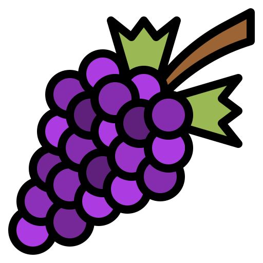

صوت و صوره
عنب
|  | العنب ثمر ناعم القشرة، لبيّ، عصيري، ينمو على شجر الكرم. تظهر الأعناب على عناقيد يوجد فيها عادة ما بين ست ثمرات إلى ثلاثمائة ثمرة يتفاوت لون ثمار العنب بحسب أصنافه وتكون ألوانها إما سوداء أو زرقاء أو بنفسجية أو ذهبية اللون تميل إلى الخضرة أو بيضاء. وضحت الأحافير المكتشفة لبذور العنب وأوراقه أن الإنسان كان يأكل العنب ويتغذى عليه منذ عصور ما قبل التاريخ وعرف العنب في الحضارات القديمة في بلاد وادي الرافدين بلاد الشام القديمة وحضارة المصريون القدماء وقد دل على ذلك النقوش والرسومات التي اكتشفت في سوريا والعراق ومصر القديمة واليونان والتي وجدت في المعابد والنقوش الأثرية التي يعود تاريخها إلى 2440 ق.م تقريباً. |
| -- |